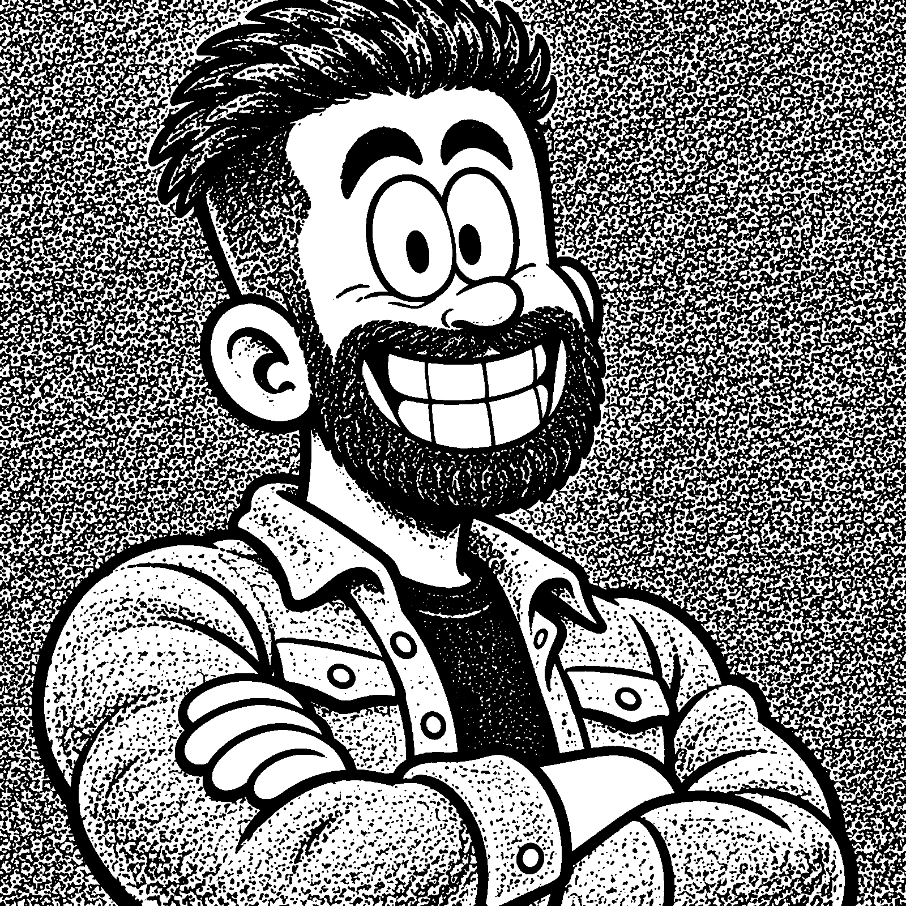
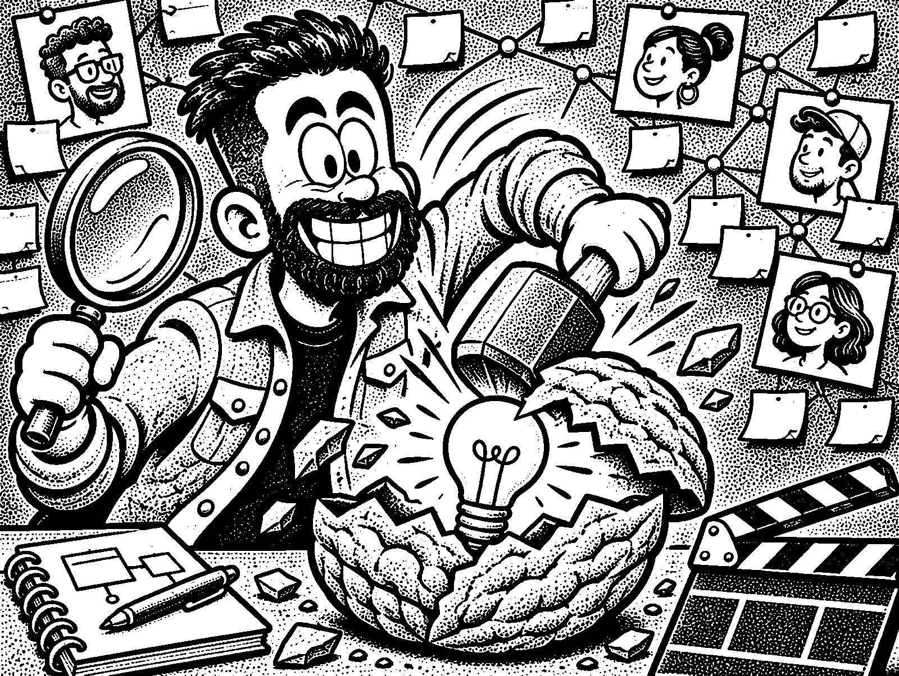
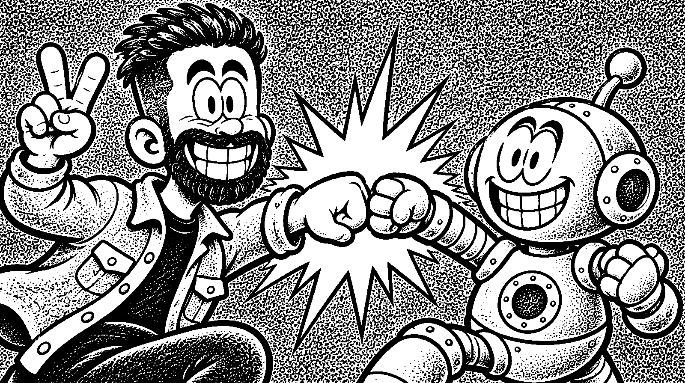

איש למידה, אבל אחר.
אני שחר עזר. כיום, מנהל צוות פיתוח למידה ו־AI Lead בחברת Lnet-Gada. כבר כמה שנים שאני מלווה ארגונים שונים בתהליכי פיתוח תוצרי למידה. פועל על פי מתודולוגיות הלמידה המוכרות, ותמיד מחפש דרך ליצור חדשנות ולשלב הומור.

בואו נודה על האמת.

רוב האנשים לא אוהבים ללמוד דברים שהם מחויבים ללמוד. אם זה לא מגיע מהם, זה בעיקר מעמסה.
מנקודת המוצא המאתגרת הזאת אני יוצא לדרך: מחקר משתמשים, תחקור מומחי תוכן, בניית תוכנית עבודה, פיצוחי מאקרו ומיקרו, כתיבת תוכן, ועד להפקת חוויית הלמידה.
ה־AI הוא חלק מהצוות.

מבצע מחקר מתמשך בעולמות הבינה המלאכותית. מוביל וובינרים וסדנאות AI, ובין היתר מנהל את הקהילות "כלים שלובים" ו־Level Up של Lnet-Gada.
משתמש בכלי בינה מלאכותית (Claude, GPT ושאר החברים) כדי ליצור מגוון של תוצרים, כמו סרטוני למידה, משחקונים ולומדות, ותמיד משתדל לעמוד בקצב השינוי.
מה אני יודע להביא לשולחן?
- פיצוח קונספט ומסמכי אפיון
- פיצוחי מאקרו וכתיבת מיקרו
- כתיבת תסריטי וידאו
- פיתוח והפקת לומדות: HTML, Storyline ו־Rise
- עריכת סרטוני וידאו באמצעות כלי AI
- פיתוח ועיצוב מצגות
- הובלת הדרכות וסדנאות
ניסיון תעסוקתי והשכלה
- מרץ 2023 עד היוםLnet
מנהל צוות פיתוח למידה ו־AI Lead- מוביל צוות של שש מפתחות למידה בעלות ניסיון מגוון. במסגרת התפקיד אחראי על בנייה והוצאה לפועל של תוכנית עבודה שנתית, קידום ההתפתחות המקצועית של הצוות וקידום תחום הלמידה הדיגיטלית.
- אחראי על מחקר, פיתוח והטמעה של כלי בינה מלאכותית בחברה ולארגונים נוספים.
- פיתוח מקצועי לצוות והטמעת תהליכי עבודה אחידים ברמת החברה, שהובילו לסטנדרטיזציה של תהליכי העבודה ולשיפור שביעות הרצון של הלקוחות.
- פיתוח מערך הדרכות לארגונים מובילים בנושאי בינה מלאכותית, כולל אפיון ממוקד לצורכי הארגון, הפקת עזרי הלמידה וההדרכות, הפצת הקמפיין ומדידת ביצועים.
- הובלת קהילה לומדת ברשתות החברתיות בשמה של החברה, פיתוח ויצירת פתרונות למידה מבוססי AI לארגונים מובילים (לומדות והפקות סרטונים), וייצוג החברה בכנסים ובוובינרים בארץ ובחו"ל.
- יולי 2022 עד היוםLnet
מפתח למידה- כתיבה ופיתוח של פתרונות למידה דיגיטליים למגוון רחב של חברות וארגונים: קורסים דיגיטליים, לומדות אינטראקטיביות, תסריטים לסרטוני הדרכה ומשחקי הדרכה.
- עבודה מול חברות וארגונים עסקיים מגוונים על לומדות, הדרכות פרונטליות, הדרכות טכניות וסרטוני הדרכה ושיווק במגוון רחב של נושאים.
- אפיון, כתיבת תוכן ופיתוח של פלטפורמות אונבורדינג למנהלים חדשים וללקוחות חדשים.
- פיצוח ופיתוח של קורסים ללקוחות מוסדיים, כמו משרד החינוך, משרד העלייה והקליטה ומשטרת ישראל.
- שירות מילואיםצה"ל
מפתח למידה- משרת מילואים פעיל כמפתח למידה במערך מגל ובמערך הינמ"מ (היחידה לניהול משא ומתן).
- השכלהתארים וקורסים
- תואר ראשון בפילוסופיה, כלכלה ומדעי המדינה, האוניברסיטה הפתוחה.
- סטודנט לתואר שני במנהל עסקים, האוניברסיטה הפתוחה.
- קורס עיצוב חוויית משתמש (UX), מכללת ג'ון ברייס.
- קורס פיתוח הדרכה בארגונים, מכללת HR+.